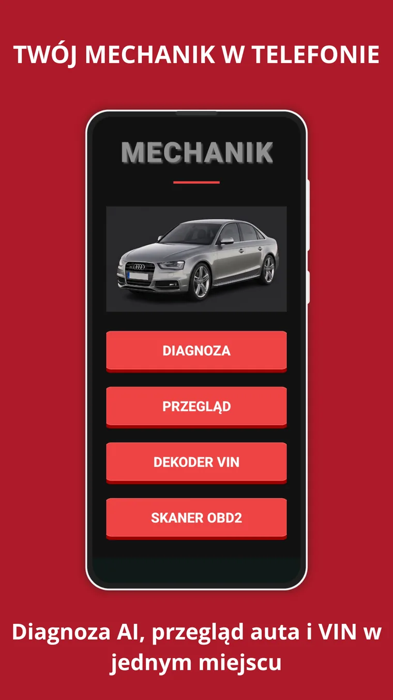
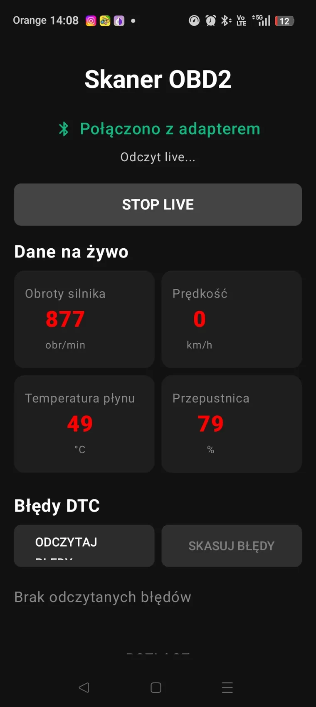
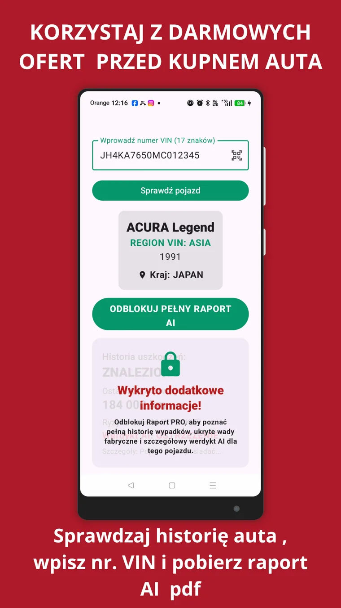
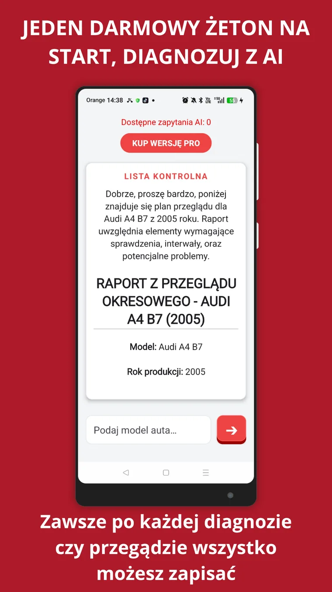

Check Engine bez zgadywania
Odczytaj kod DTC, zobacz możliwe przyczyny i sprawdź, kiedy dalsza jazda może być ryzykowna.
Czytaj poradnikMój Mechanik pomaga odczytać błędy OBD2, zrozumieć kod DTC, sprawdzić VIN i przygotować raport AI PDF, zanim pojedziesz do mechanika albo kupisz używane auto.

Gdy auto pokazuje błąd, najpierw odczytaj kod OBD2, sprawdź objawy i ryzyko jazdy, a dopiero potem podejmuj decyzję o naprawie. Mój Mechanik porządkuje te dane w prosty raport dla kierowcy i warsztatu.
Jedna aplikacja do szybkiej diagnozy usterek, odczytu danych OBD2, sprawdzania VIN i tworzenia raportów, które możesz pokazać mechanikowi.
Odczytaj kod DTC, zobacz możliwe przyczyny i sprawdź, kiedy dalsza jazda może być ryzykowna.
Czytaj poradnikPodłącz adapter do gniazda OBD2 i sprawdź dane live: obroty, temperaturę, przepustnicę oraz błędy DTC.
Jak podłączyć adapter?Sprawdź, dlaczego P0420 nie zawsze oznacza natychmiastową wymianę katalizatora.
Analiza P0420Screeny pokazują najważniejsze funkcje: diagnozę AI, skaner OBD2, dekoder VIN i raporty przydatne dla kierowcy.



Mój Mechanik AI to aplikacja dla kierowców, która pomaga szybciej zrozumieć problemy z autem. Możesz sprawdzić błędy OBD2, odczytać kod DTC, użyć dekodera VIN i przygotować raport AI PDF przed wizytą w warsztacie albo zakupem używanego samochodu.
Krótkie odpowiedzi pod kierowcę, który chce szybko zrozumieć problem z autem.
Odczytaj kod DTC przez OBD2, sprawdź objawy i nie kasuj błędu bez zrozumienia przyczyny. Zacznij od strony Check Engine.
Do podstawowego OBD2 zwykle wystarcza kompatybilny adapter, ale zakres danych zależy od auta i jakości urządzenia. Sprawdź poradnik ELM327 Bluetooth.
P0420 dotyczy skuteczności katalizatora, ale wymaga sprawdzenia sond lambda, wydechu i spalania. Zobacz analizę błędu P0420.
Nie. Mój Mechanik pomaga zebrać dane, zrozumieć objawy i przygotować raport, ale decyzję naprawczą powinien potwierdzić warsztat.
Mój Mechanik to wsparcie dla kierowców, którzy chcą szybciej zrozumieć usterkę, przygotować się do rozmowy z mechanikiem i rozsądniej podejść do zakupu samochodu używanego.
Pobierz aplikacjęPraktyczne poradniki o check engine, braku mocy, szarpaniu auta i sprawdzeniu VIN przed zakupem.
Zobacz poradnikZgodnie z zasadami Google Play, umożliwiamy usunięcie konta oraz powiązanych danych z naszej bazy Firestore.
Pobierz Mój Mechanik z Google Play.
Pobierz Mój Mechanik z Google Play